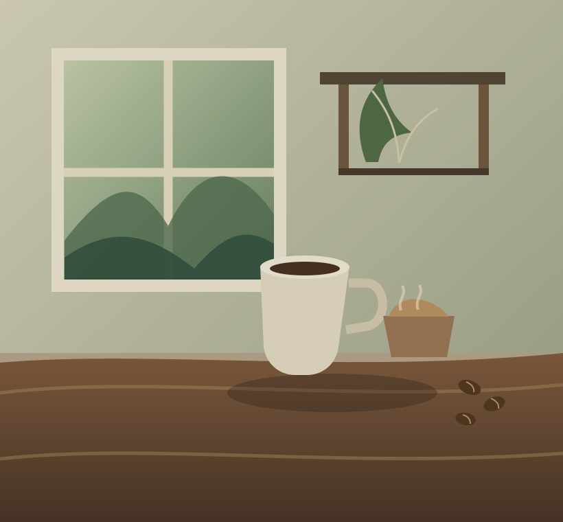

認真選豆
從風味與品質出發，挑選適合分享給日常的咖啡豆。
THE STORY BEHIND THE CUP
一杯好咖啡，從願意慢下來的心意開始。
OUR BEGINNING
天咖啡的起點，是想為日常留下一個小小的空檔。當生活總是向前趕，一杯咖啡讓人重新感受香氣、溫度與此刻，也提醒我們：不必等到特別的日子，平凡的一天同樣值得好好品味。
我們希望把這份簡單的心意分享出去，讓每個人都能用自己的方式，找到一杯自在、合心意的咖啡。

WHAT WE BELIEVE
這三份堅持，陪著我們走過每一杯咖啡。
從風味與品質出發，挑選適合分享給日常的咖啡豆。
尊重每一批豆子的個性，讓香氣與口感自然呈現。
不追求繁複形式，讓喝咖啡成為人人都能享受的片刻。
A TEAM WITH CARE
從挑選咖啡豆、掌握烘焙，到把咖啡分享出去，團隊一起照看每個日常細節。
留意咖啡豆的風味與品質，挑選適合日常品飲的選擇。
依照咖啡豆的特性細心烘焙，讓香氣與口感自然呈現。
以一杯用心沖煮的咖啡，陪伴每個人自在度過日常片刻。
LET'S TALK OVER COFFEE
歡迎與我們聯絡，聊聊一杯咖啡裡的日常。